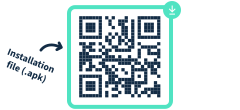
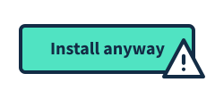
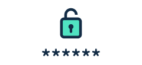
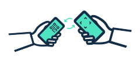

Die re:visit Scanner App für Gastrobetriebe ist aktuell bei Google im Review und wird danach im Google Play Store verfügbar sein. Damit in der Zwischenzeit re:visit bereits eingesetzt werden kann, ist es möglich die App manuell auf dem Smartphone zu installieren. So gehts:

Öffne https://revisit.ch/revisit.apk auf deinem Smartphone und laden das .apk File auf dein Smartphone herunter.

Installiere die Scanner App auf deinem Smartphone.
ACHTUNG: Da es sich um eine manuelle Installation aus dem Browser handelt, muss die Option "install anyway" ausgewählt werden, falls eine entsprechende Meldung auftaucht.
Zudem kann es sein, dass eine Einstellung aktiviert werden muss, um die Installation von Apps über den Browser zu erlauben.

Melde dich in der Scanner App mit dem gleichen Gastro-Login und deinem geheimen Schlüssel an

Fertig! Du kannst nun die QR-Codes, die deine Gäste auf revisit.ch generieren können, scannen und optional mit einer Tisch- und Servicekraft-Angabe ergänzen.
 So funktioniert re:visit für deinen Gastrobetrieb
So funktioniert re:visit für deinen Gastrobetrieb